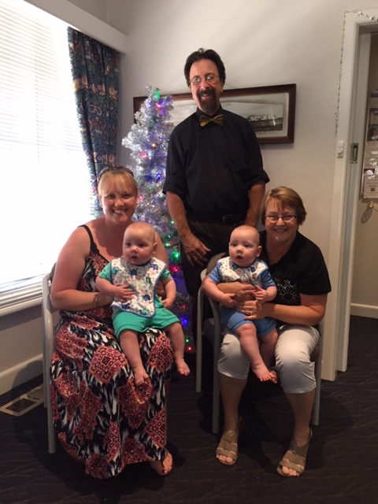

Mission Statement
Dr McCallum, supported by his caring and dedicated staff at Craignish Specialist Centre, aims to provide comprehensive care and support to women in pregnancy and with a range of gynaecological problems. No effort is spared in providing timely, professional care in a friendly, welcoming environment. Emergency cases and urgent problems will be dealt with as quickly as possible in order to resolve the issue and allay anxiety.

Confidentiality
At Craignish Specialist Centre, patient confidentiality is taken very seriously and you may be assured that your personal health details will be stored securely and handled with the utmost discretion.